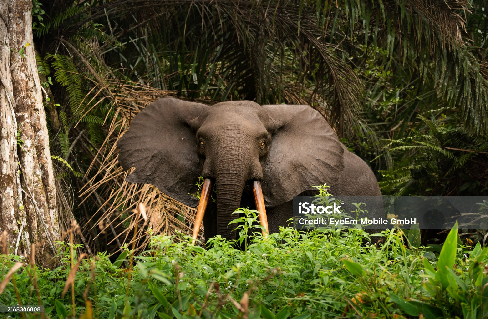

Ogooué-Maritime
18k
Parc National de Loango
Où les animaux de la forêt marchent sur la plage

RetourPlongez au cœur du dernier Éden sauvage de l'Afrique
Le Gabon est une destination d'exception, véritable sanctuaire de biodiversité où la forêt équatoriale couvre plus de 80% du territoire. Surnommé "Le Dernier Éden", c'est l'un des rares endroits au monde où l'on peut voir des éléphants et des hippopotames sur des plages sauvages. Des parcs nationaux mythiques comme Loango ou Ivindo à la richesse spirituelle du Bwiti, le Gabon offre une expérience de voyage intense et originelle.
Explorez les 15 merveilles naturelles et culturelles du Gabon
Où les animaux de la forêt marchent sur la plage

Les plus impressionnantes chutes d'eau d'Afrique Centrale

Paradis balnéaire face à Libreville

Patrimoine mondial mixte (Nature & Culture UNESCO)

Lieu chargé d'histoire au bord du fleuve Ogooué

Élégance moderne de la capitale gabonaise

Paysages de savanes vallonnées et canyons spectaculaires

Falaises escarpées et grottes marines sauvages

Le plus grand site de ponte des tortues Luth au monde

Densité exceptionnelle de gorilles et de chimpanzés

Porte d'entrée des plateaux et traditions séculaires

La cité pétrolière entre lagunes et océan
Frontière naturelle et eaux turquoises du nord-ouest
Patrimoine archéologique et spirituel souterrain

Sommets embrumés et biodiversité rare
La puissance des masques et la sagesse du Bwiti.
Le Gabon possède une culture d'une profondeur mystique exceptionnelle. Des masques blancs Punu à la statuaire Kota, l'art gabonais a influencé les plus grands maîtres du XXe siècle. Au cœur de cette identité se trouve le Bwiti, rite ancestral de passage et de connaissance, utilisant l'Iboga pour connecter les hommes à leurs ancêtres et à la nature sacrée.
Des masques d'une pureté géométrique rare, symboles de beauté et de spiritualité.
Une philosophie vivante qui structure la société gabonaise et son rapport au sacré.
La harpe sacrée dont les sons accompagnent les veillées traditionnelles et les initiations.
Le respect des aînés et le sens profond de la communauté, piliers de la vie sociale.

Découvrez l'excellence de l'art gabonais. Des masques sacrés aux chocolats de l'estuaire, emportez l'excellence du pays.
 Art unique
Art unique
Réplique artisanale fine du célèbre masque blanc, symbole de la beauté et de la pureté féminine.
 En stock
En stock
Objet d'art taillé dans la célèbre stéatite (pierre de savon) grise du sud du Gabon.
 Gourmet
Gourmet
Tablette de chocolat noir premium, issu de fèves de cacao sélectionnées dans les plantations de l'Ogooué.
Vannerie robuste et décorative réalisée à partir de fibres végétales de la forêt équatoriale.
Figure gardienne emblématique en bois recouvert de plaques de cuivre et laiton.
Instrument de musique traditionnel en bois et fibres, utilisé pour les mélodies de la forêt.

Libreville, Bord de Mer

Libreville, Haut de Gué-Gué

Libreville, Sablière

Libreville, Centre

Port-Gentil, Front de mer

Lambaréné, Bord de fleuve
La cuisine gabonaise est un hymne aux saveurs de la forêt et de l'océan. Elle utilise largement la noix de palme, le manioc et les épices locales.
Le plat national : poulet dans une sauce onctueuse de noix de palme fraîche.
Bar ou Capitaine grillé au charbon, servi avec du piment et des plantains.
Préparées à l'huile de palme ou à la pâte d'arachide, un délice fondant.
Fruit local bouilli ou grillé, surnommé le "beurre d'Afrique".
Spécialité des côtes gabonaises, relevée aux épices locales.
Gros bouquet de crevettes fraîches sautées à l'ail et au persil.
Manioc fermenté et cuit à la vapeur dans des feuilles de bananier.
Gibier traditionnel fumé longuement, servi en ragoût épicé.
Accompagnement onctueux pour les viandes ou le poisson fumé.
L'accompagnement sain et énergétique par excellence.
Boisson rafraîchissante et acidulée, indispensable lors des repas.
Soupe légère et pimentée à base de poisson frais du jour.
Le Gabon célèbre sa diversité culturelle à travers des fêtes nationales et rituelles.
Célébration des arts de la scène et des sorties de masques rituels (Libreville).
Cérémonies ancestrales nocturnes au son du Ngombi (Harpe sacrée).
Grandes célébrations nationales le 17 août avec parades et concerts populaires.
La période idéale pour l'observation des baleines et les safaris en forêt. Le temps est frais et les précipitations sont rares.
C'est le moment d'assister à la ponte des tortues luth sur les plages de Mayumba et de la Pointe Denis.
Le Gabon est l'un des pays les plus sûrs de la région. Respectez les règles dans les parcs nationaux (rangers obligatoires).
Vaccin fièvre jaune obligatoire. Traitement antipaludéen impératif. Prévoyez des répulsifs puissants pour la forêt.
Interdiction stricte de filmer ou photographier les bâtiments officiels et militaires. Demandez toujours avant de photographier quelqu'un.
Franc CFA (XAF). Les cartes sont acceptées à Libreville, mais prévoyez du cash pour tout voyage en province.
Ranger & Expert Faune
Jean est le guide ultime pour le parc de Loango. Il saura vous mener en toute sécurité vers les éléphants de plage.
Guide Culturelle & Bwiti
Aurore vous fera découvrir l'histoire spirituelle du Gabon et les traditions des peuples de l'Ogooué.
Expert Forêt & Chutes
Spécialiste des expéditions vers les chutes de Kongou, Gaston est un pisteur hors-pair en forêt dense.